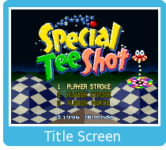
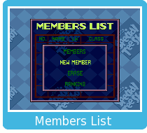

Press on the title screen. Use to select the game mode (one-player, two-player stroke play, or two-player match play), then press to confirm your selection.
When playing Special Tee Shot for the first time, select "New Member" on the Members List to register your name. Use and to sign your name in the box.

During multiplayer games, each player will need a controller compatible with the Virtual Console. For more information, check the Wii Operations Manual.


 on the title screen. Use
on the title screen. Use  to select the game mode (one-player, two-player stroke play, or two-player match play), then press
to select the game mode (one-player, two-player stroke play, or two-player match play), then press